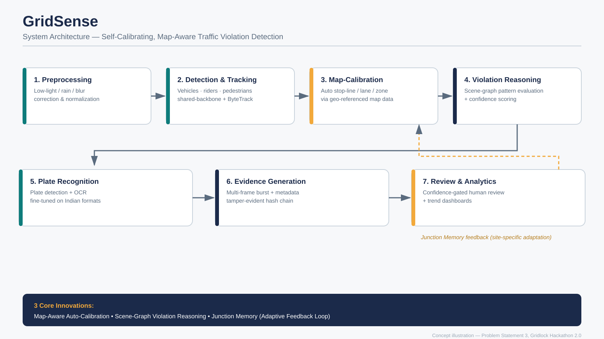
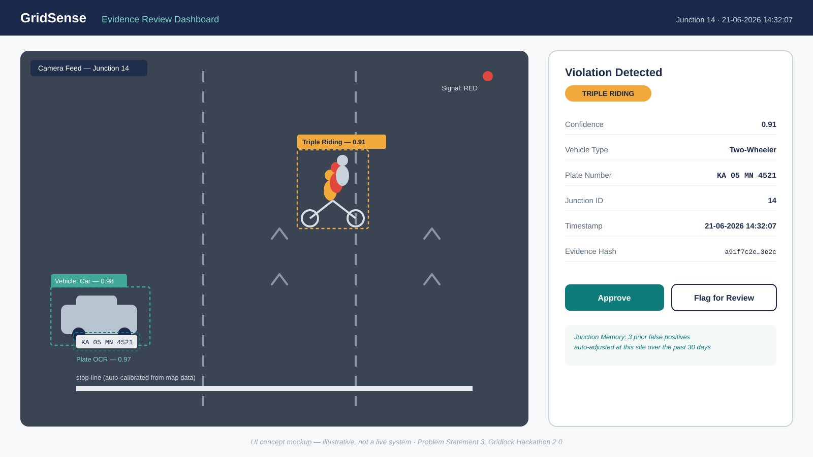

A self-calibrating, map-aware computer vision system for automated traffic violation detection and evidence generation.
Three structural gaps limit deployed traffic-camera enforcement systems, beyond the core detection task itself.
Every camera needs manual, on-site calibration of stop-lines and lane zones in pixel coordinates before it can be useful.
A separate hardcoded model or rule per violation type makes new violation categories expensive to add.
A single still photo is often insufficient or contestable as legal evidence for judgment-based violations.
GridSense reframes violation detection as a calibration and reasoning problem, not just a detection problem.
Geo-referenced road network data automatically aligns real-world lane geometry and stop-lines to a new camera's pixel space — no manual zone-drawing.
Vehicles, riders, signal state, and zones become nodes in a graph; violations are inferred from relationship patterns, not hardcoded per-type classifiers.
Human-reviewer feedback locally adapts each camera's thresholds, letting one global model adjust to site-specific quirks without retraining.

A mockup of the reviewer-facing dashboard: confidence-gated review, structured metadata, and a tamper-evident evidence record.

Each is inferred from the same scene-graph reasoning layer rather than a dedicated model.